packet tracer实验学习笔记
主要说明一些基本的使用方法，有助于上机实验的顺利进行
1、界面说明
打开软件之后，在下方会出现一些不同设备的标志

从左到右依次是路由器，交换机、集线器和无线设备。
点击左边的图标就可以在右边显示详细型号。我们一般路由器选择2811（端口数量多），交换机选择Switch-PT。左下角主机中我们可以选择最普通的PC-PT，而右边的电标志是不同的网线，其中的console线、copper straight-through和copper cross-over线最为常用。
2、电脑连接路由器
我们可以首先设置一个路由器，然后设置一个PC，然后使用console线将它们连起来。我们需要让console线接在PC的RS-232端口上，以及路由器的Console端口上。这样就可以通过PC来操作路由器。

之后我们再连一条交叉线crossover线在PC和路由器之间，使用PC剩下的FastEthernet端口和Router的FastEthernet端口。
我们可以看到现在这两条线的两端都是红色的，这是因为我们还没有给它们配置端口IP。
点击PC，点击上方的desktop，来到desktop界面

选择里面的terminal，点击ok，来到路由器的配置命令行界面（相当于我们在通过console线和PC上的命令行来远程操作路由器）。在第一次使用时，我们可以输入no来跳过配置阶段。之后我们可以输入enable命令开启管理员权限
输入configure terminal命令进入配置模式
输入int fastEthernet 0/0进入0/0端口
输入ip address 192.168.0.1 255.255.255.0配置端口ip和子网掩码
注意：不能为IP配192.168.0.0，因为这是一个保留地址，必须从192.168.0.1开始
输入no shutdown打开该端口
输入exit退出端口

接下来关闭teriminal，返回desktop，点击左上角的ip configuration进入本机的IP配置，选择static（非DHCP自动分配IP地址），在第一行IP Address输入192.168.0.2（区别于路由器地址），但是必须和路由器在同一网段，即192.168.0的网段。
输入完成之后，子网掩码应该会被自动配置。然后我们对第三行Default Gateway中输入路由器端口地址，即192.168.0.1

这个时候应该路由器和PC之间的线的两端就会显示绿色。

我们也可以打开本地的命令提示符，即desktop界面上面的右边第二个Command Prompt，输入ping 192.168.0.1，应该可以正确ping通。
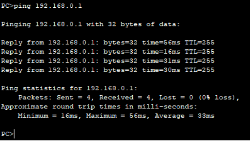
然后我们就可以在这个拓扑中添加一个交换机，并使用直通线连接两者。直通线选择交换机的0/1端口，选择路由器的0/1端口

再次进入PC的terminal，用相同的方法为端口0/1配置一个新的IP，如192.168.1.1，注意这里的网段已经改变了，从192.168.0变成了192.168.1。因为路由器的功能就是在不同的端口处分配不同的网段。

然后，我们再添加一个电脑，用一根直通线连接到交换机。PC使用fastEthernet端口，而交换机使用1/1端口。然后再使用一根console线从PC的RS-232端口连接到交换机的console端口。

接下来打开这个新的PC的Terminal，来确保交换机已经开启。正常情况下应该不需要对交换机进行操作也能自动打开。

接下来返回desktop界面，在IP Configuration 中配置本机的IP，可以是192.168.1.2

接下来你就可以在这台PC上ping之前一台PC，理论上就可以ping通

3、路由器相连
通常如果在一个网络拓扑中出现了好几个路由器，分隔了许多网段的话，我们还需要在配IP之外额外做一件事情。
配置一个网络拓扑如下图。其中路由器与路由器之间使用交叉线。（其实现实中我们应该使用serial串口线，但是packet tracer中的路由器没有相关的网卡（需要手动安装），所以只能先用交叉线代替）

其中左半边两个PC的IP地址分别为192.168.1.2和192.168.1.3，右半边两个PC的IP分别是192.168.3.2和192.168.3.3；中间两个路由器分割了不同的网段，其中左边路由器连接左边交换机的网段的端口IP地址为192.168.1.1，连接右边另一个路由器的端口IP地址为192.168.2.1，而右边路由器连接右边交换机的IP为192.168.3.1，连接左边路由器的IP为192.168.2.2
配完全部的IP地址，并且打开了所有的端口之后，灯应该会全部亮起。这时候我们可以尝试图中的PC6去pingPC7（192.168.1.3），应该可以ping通，但是去ping右边网段的PC8或PC9时，会发现ping不通。这是因为左边的路由器Router0中没有关于右边192.168.3.0网段的消息，因此无法得知该往哪边传输。
所以我们需要做的就是为路由器配置路由表，让路由器知道该如何去那个网段。
打开左边的Laptop0，进入Terminal，输入enable、configure terminal后使用命令ip route <目的网段> <子网掩码> <下一跳地址>来配置。它的意思就是告诉路由器：想要到达某个子网掩码的目的地址，需要先经过下一跳地址。
因此，我们可以输入ip route 192.168.3.0 255.255.255.0 192.168.2.2来告诉路由器0：想要到达192.168.3.0/18网段，需要先经过192.168.2.2端口。

同样，我们也需要给右边的路由器也配好路由表。进入laptop1的terminal，输入命令ip route 192.168.1.0 255.255.255.0 192.168.2.1

这个时候我们可以查看两台路由器的路由表，使用show ip route命令。

可以看到左边的路由器确实拥有了去192.168.3.0/24的下一跳地址的信息。右边也一样。其中的s表示的是静态路由

当然，在packet tracer中我们可以直接使用界面右边的工具栏来查看每个设备的信息。

点击放大镜图标，然后点击其中一个路由器，选择其中的Routing table 就可以查看到路由器的路由表。

这个时候再尝试从左边网段的PCping到右边网段的PC：

可以看到虽然刚开始的没有接收，但是后面已经可以收到返回信息。
4、动态路由RIP
刚刚我们配置路由表，添加的是静态路由，这意味着它无法适应更新，同时也会消耗很多人力来配置。因此我们可以使用动态路由协议RIP来实现自动配置路由表。
首先我们使用的是刚刚的拓扑。为了重新配置路由，需要先把两个路由器断电，然后重启。
关机的方法如下，只需要来到路由器的Physical界面，点击上方Physical Device View下方的图片的右端电源按钮即可断电。

然后重新打开电源，为它们重新配置端口IP并打开。
之后如果我们之前保存过配置的话，我们需要删除静态路由，在左右两个路由器中分别使用命令no ip route 192.168.3.0 255.255.255.0 192.168.2.2和192.168.1.0 255.255.255.0 192.168.2.1
如果显示的是No matching to delete 或是不显示，都说明成功了
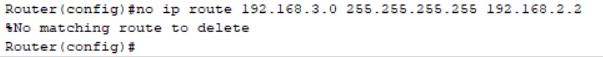
然后，我们可以先试一下在左边1.0网段的PCping到右边3.0网段的PC。应该是ping不通的

之后我们来配置RIP协议。只需要在两个路由器上分别使用router rip命令进入配置模式，然后使用network <直连的网段>来为路由器说明这个路由器连接了哪几个网段。
例如左边的路由器，与它直连的网段是192.168.1.0和192.168.2.0，因此可以这样输入：
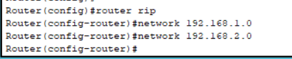
这样做就是告诉路由器它连接了1.0和2.0网段，需要记得监听来自这两个网段的消息。
同理，我们也对右边的路由器进行同样的配置。这个时候我们再在1.0网段的PC上尝试ping3.0网段的PC。

可以看到，等待一段时间后就可以ping通3.3的PC了。
我们也可以这时候查看一下路由器的路由表，在特权模式使用show ip route命令或者使用packet tracer右边的放大镜。

会发现多了一条标记为R的项，这就是使用RIP自动配置的路由表。
5、动态路由OSPF
与RIP类似，OSPF也是一个动态路由选择协议，是开放式最短路径优先。它的性能优于RIP。
同样的，我们重新点击路由器电源按钮断电，然后重启，重新配置每个端口的IP。这个时候应该仍然从1.2ping不通3.3
这个时候需要来配置OSPF。与RIP类似，我们需要进入到左边属于1.0子网的路由器中，输入router ospf 1命令进入ospf配置模式。这里面的参数1表示的是进程号为1（可暂时不理会进程号的概念）
然后我们输入network 192.168.1.0 0.0.0.255 area 0和network 192.168.2.0 0.0.0.255 area 0 。这两段代码是用来指定自治系统的，意思其实是：告诉路由器192.168.1.0和192.168.2.0网段中的所有主机都属于自治系统0；其中0.0.0.255这个子网掩码就是表示选择的是：IP地址前24位与指定的地址相同，后8位任意的所有主机。所以192.168.1.1、192.168.1.2、192.168.1.3都会包含在192.168.1.0 0.0.0.255中。当然，1.0和2.0网段中的所有主机也都属于指定的area 0自治域。所以在一个自治域中，主机就可以相互通信。
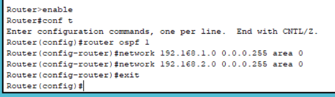
同理，我们给3.0网段下的路由器也配置一下ospf，指定2.0网段和3.0网段也属于自治系统0。

这个时候我们就可以尝试从1.2的PCping到3.3的PC
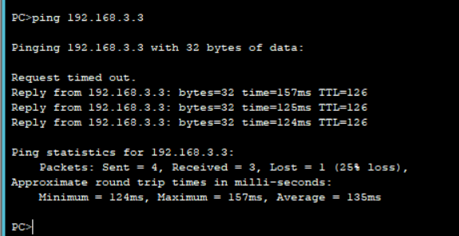
发现也是可以ping通的。这个时候我们还是可以查看一下路由表。

会发现其中多了一条标记为O的记录，代表OSPF配置的一项。
我们也可以通过show ip protocols查看当前ospf的情况：

这里面的routing for networks 就是你设置的自治系统。它将子网192.168.1.0和192.168.2.0都归为了一个自治系统0下。
当然。一般为了提高网路的稳定性，我们在配置ospf前还会先给每个路由器配置环回接口。这个接口是一个虚拟接口，不依赖任何物理接口。它的作用就是，在路由器的物理端口不稳定时也能用于标记这个路由器。在OSPF包头中有一个ID域，包含了每个路由器的ID值。这个ID值通常是用来唯一确定每个路由器的。ID域的自动选择规律通常是：如果路由器配置了环回接口，那么就选择环回接口中IP地址最大的；否则，就选择各物理接口中地址最大的。所以，当我们配置完环回接口时，ospf就可以选择这个环回接口的IP地址作为路由器的ID，而这个接口通常比物理接口更稳定，因为它从不主动关闭，所以就可以起到稳定的作用。
现在尝试对在1.0和3.0网段下的两台路由器分别配置环回接口。首先进入1.0网段的路由器，选择lo0接口。（与通常选择物理接口的命令一致，而这个接口通常都是存在的，因此可以直接选择）
然后为它的IP地址配置为10.0.0.1。注意这里要将子网掩码设成255.255.255.255
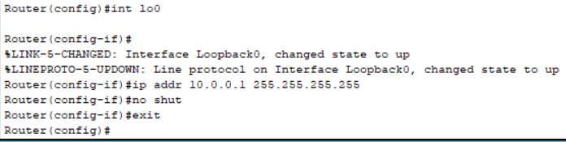
同理，为另一端的路由器也设置环回地址，地址为10.0.0.2，子网掩码255.255.255.255
然后，我们需要重启ospf进程。关闭原来的ospf进程。在两个路由器中都输入命令no router ospf 1来清除两个ospf进程。然后也都重新输入router ospf 1来重新打开ospf
然后我们重新使用show ip protocols命令查看

可以看到这里的Router ID变成了10.0.0.1。这是因为重新打开ospf后，ospf选择了环回地址作为路由器ID
除此之外，我们继续使用show ip ospf查看刚刚的ospf进程
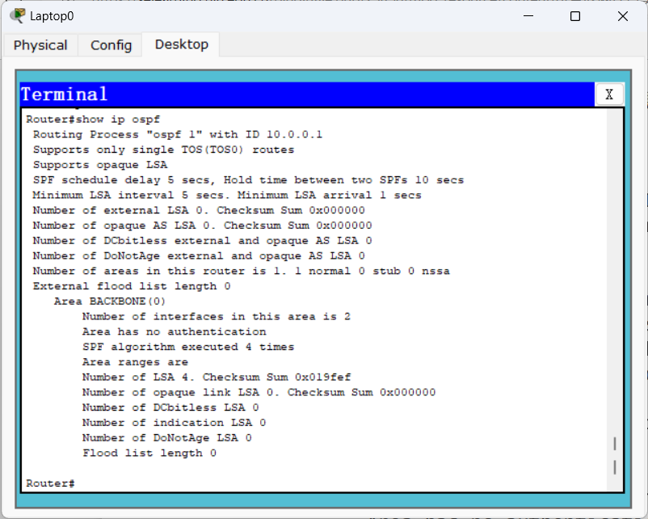
第一行就显示了ospf进程1，以及ospf上本路由器的ID（10.0.0.1）（如果在没有使用环回接口的时候应该会显示的是原来的最大物理地址192.168.2.1）
进一步，我们可以使用命令show ip ospf interface来查看各个ospf端口的信息：
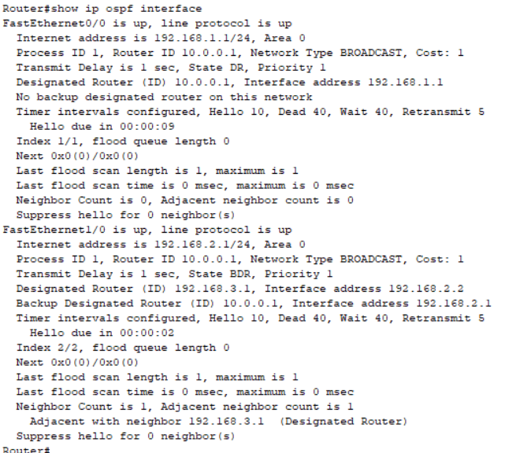
从这里面我们可以看到与这个路由器相连接的两个端口：0/0口和1/0口，以及这两个口分别对应的IP地址与所属的自治区域（在每个端口下的第一行，都为0，是之前配置ospf时设的）。第二行显示的是这个端口所属的路由器的进程ID和路由器ID（都为1和10.0.0.1，都是我们刚刚设置的，如果没有使用环回接口这里应该是192.168.2.1），第三行说明了这个端口所在的路由器在这个端口所属的网段上属于DR还是BDR。这里可以看到对于0/0端口，这个路由器是DR，而对于1/0端口，这个路由器是BDR。
接下来是对于DR和BDR的简单解释。
在OSPF网络中，每个路由器都要和同一自治系统中的它的所有邻居路由器交换信息（即和同一网段中的其他路由器交换信息（一个路由器一般属于不止一个网段）），这会导致网络开销巨大（特别是在每个路由器直接都形成邻接关系的时候）。所以我们使用DR和BDR作为指定路由器和备用指定路由器，来当一个代表，那么其他路由器只需要和每个网段中的DR交互一次即可，大大减少了交互次数。
一个网段中的DR和BDR是需要选举的。选举时需要将DR和BDR分开选举。选举方式通常是先比较每个路由器所属这个网段的端口的Priority，选择其中最大的作为DR或BDR，如果一样大那么再比较路由器Router ID，最大的就成为DR或BDR。一般计算时，可以先按这个方法选出DR，然后就把仅次于DR的作为BDR。一般来说每个端口的默认Priority都是1，所以很多情况下比较的都是Router ID。
具体来说，每个路由器端口都会设置自己是否愿意参加选举成为DR或BDR（看的是priority是否为0，如果为0就不参加选举）。然后在确认身份的时候会发生的报文中也包含了DR或者BDR的字段。选举时，通常先选举BDR。先把所有不愿意成为DR（DR字段为空）但愿意成为BDR的挑出来，按照上面说的比较Priority和Router ID的方法选出BDR。然后再从所有愿意成为DR的人中用同样的方法选出DR。（实际过程中要更加复杂，涉及到没有人愿意成为DR或BDR的情况，这里不再考虑）自己实际计算时，我们只需要使用刚刚说的先选最大优先级的DR，再选出仅此6于DR的就是BDR。
根据这个规律，我们就可以知道路由器的每个端口中谁是DR谁是BDR。注意：由于DR和BDR都是针对一个网段来说的，而由于一个路由器有可能属于不同的网段，所以一个路由器，它在一个网段中的身份是BDR，可能在另一个网段中的身份就是BDR或其它（DROthers）。
在这里，0/0端口是1.0网段的端口，这个网段只有它一个路由器，所以这个路由器在这个网段也就成为了DR。而1/0端口是2.0网段的端口，而2.0网段有两个路由器，其中另一个路由器的Router ID是10.0.0.2，比自己的10.0.0.1更大，因此那个路由器就成为了DR，而我们也就成为了BDR。
从命令响应的每个端口的倒数第二行就可以看出这个端口所在的网段有几个邻居。
6、网络地址转换NAT和端口地址转换PAT
网络地址转换（NAT）主要用于将专用地址和公用地址之间进行转换。当我们想与公网上的某个设备通信时，我们可以先把自己的地址设为本地地址，然后利用网络地址转换将其转换为公用地址，同时当其他设备通过公网来访问本地时，也可将公网地址对应转换为专用（本地）地址，这样也可以达成专用地址复用，最大限度节约IP资源。
实现NAT的方式有几种，其中一种就是端口地址转换PAT。这种做法就是端口复用，使得内部网络的所有主机共享一个外部IP地址，又可隐藏网络内部的所有主机。
还是与上一个拓扑相同，但是需要修改IP地址。
这个时候我们需要使用外部IP地址，而在连入广域网时需要使用的端口应该为（光纤接口）serial口。所以需要先将两个路由器关机，然后删除原有的交叉线为其设置广域网的Serial线。
注意：Serial线需要注意DCE端和DTE端。一般针头是DTE端（公头），孔头是DCE端（母头）。DTE是数据终端设备，如路由器、终端主机。DCE是数据通信设备，如调制解调器，ISDN适配器等等。在通信时，DCE端（母头）必须设置时钟频率，否则无法正常通信。而DTE端无需设置，只需要按照DCE端的频率来。这次的两个路由器之间使用DTE线即可。
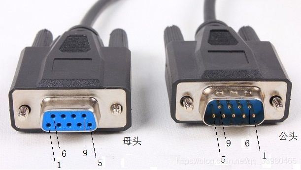
我们需要使用外部IP地址来模拟公网，因此需要将需要将原来的192.168.3.0网段修改为8.8.8.0/24网段，将路由器、两台PC的IP地址分别设为8.8.8.1、8.8.8.2和8.8.8.3；同时也修改两台路由器之间Serial线连接的网段为202.202.240.0/24，将左右两台路由器的IP分别设为202.202.240.1和202.202.240.2

注意这个时候，把鼠标放到那根DTE线上，会显示线的一端会出现一个时钟的图标

通常，带时钟的一端就是DCE端。这意味着我们需要在DCE端设置时钟频率。可以使用下面的命令设置时间频率为64000。

其中你需要切换到的是属于DCE端的端口，不一定是图上的端口。
接下来为每个路由器设置ospf来确定路由表。进入连接192.168.1.0网段的路由器，输入以下命令，即可配置ospf

同样的方式来到另一个路由器进行同样的配置。注意配置时network中输入的是202.202.240.0网段和8.8.8.0网段，子网掩码相同
在设置完成后，可以查看路由表。可以发现其中有一个O标记的ospf产生的一项。（如果没有正确设置DCE端口的时钟周期，是无法看到的）

这个时候尝试从192.168.1.2ping到8.8.8.2，应该可以成功
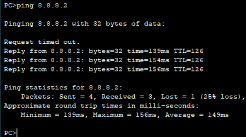
接下来我们将连接8.8.8.0网段的路由器看出互联网中的骨干路由器（会丢弃所有私有（专用）IP地址的包）。可以通过在那个路由器实施访问控制ACL，来模拟丢包过程。


其中access-list 1 deny 那句命令就是创建了一个访问控制列表access-list，序号为1，这个list会拒绝所有来自192.168.1.0网络的包；进入目标端口后，使用ip access-group 1 in命令为它添加访问控制的序号为1的那个list，即我们刚刚创建的list。因此，它就会按照这个包中的信息，拒绝所有来自192.168.1.0/24网段的包
这个时候可以试试从192.168.1.2ping到8.8.8.2，发现会失败。

接下来我们就需要使用nat来转换网络地址。它有许多方式。首先我们可以尝试使用静态nat配置，即一对一映射。
我们需要来到连接到192.168.1.0/24网段上的路由器，然后使用命令配置静态nat

这个命令中，inside source表示指定的是内部网络，static表示静态，然后的两个地址分别代表将前一个地址转换为后一个地址。因此来自192.168.1.2的包在经过路由器转发时就会变成202.202.240.3的IP地址。
这个时候再设置一下两个端口中哪个是内部端口，哪个是外部端口

这个时候可以尝试一下从192.168.1.2ping到8.8.8.2，应该就可以成功。

除了静态nat之外，我们还可以设置动态nat，方法是设置一个nat池。
首先我们需要将刚刚设置的静态nat删除，方法是输入刚刚创建nat的代码，然后在最前面添加no。然后我们创建一个访问控制列表access-list，再创建一个nat池，里面添加一些你可以变成的地址。然后再使用nat创建命令指定inside source。

我们首先创建了一个允许所有192.168.1.0网段的主机通过的access-list，然后我们创建了一个名为abc的nat池，里面装入了两个IP地址，设置了子网。这两个IP地址就是在映射时的值域。最后使用了ip nat命令，添加了list 1 为source，pool abc为映射值域。
然后我们再次去192.168.1.2主机ping8.8.8.2，应该也是成功
之后我们再次使用第三种nat方法：端口地址转换PAT
与之前一样，清除刚刚配置的nat，然后我们继续沿用刚刚创建的access-list，直接将命令中access-list后面的参数设成一个端口，起到端口复用的效果
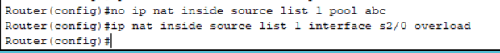
这其中的interface就是指定你需要作为共享端口的那个端口，overload就指示了使用的时PAT端口复用。
再次使用ping命令进行验证。理论可行。
除此之外，使用PAT也可以使用nat pool来指定输出时的IP地址。
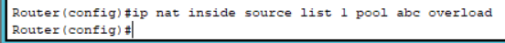
7、虚拟局域网VLAN
由于交换机连接的是同一个子网，在大型网络中进行广播时，会严重影响网络性能。因此我们可以使用虚拟局域网来为交换机划分不同的网段。
首先构建一个新的，以交换机为核心的拓扑

其中将PC0和PC1分别连接到交换机的端口0/1和0/2，IP地址分别设为192.168.0.2和192.168.0.3PC2和PC3连接到0/11和0/12，IP地址分别设为192.168.1.2和192.168.1.3，PC4和PC5连接到0/21和0/22，IP地址分别设为192.168.2.2和192.168.2.3.
接下来进行子网的划分。首先我们先再新建一个电脑，用console线连接到这台交换机上，然后对交换机进行操作。
首先进入配置模式，输入vlan 命令创建一些虚拟局域网，将其取别名，然后退出，为每个vlan端口设置网关。

最后为不同的端口分配不同的虚拟局域网。可以使用range来一次性分配多个端口

这样子就可以实现将不同的IP和端口分配到不同的子网下。每个端口都会对应一个子网。接下来我们将每个PC的网关都设为所属的虚拟局域网的网关（PC0-1为192.168.0.1，PC2-3为192.168.1.1，PC4-5为192.168.2.1）
然后我们可以尝试在PC0上ping到pc1和pc3.
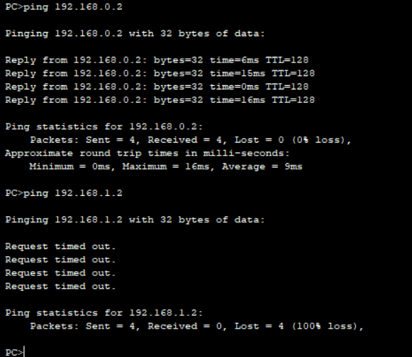
可以发现同一个虚拟网段下可以ping通，但是不同的虚拟网段下不行。这就在交换机中划分了网段。
8、访问控制列表ACL
ACL其实在之前我们已经使用过了，也就是在创建NAT的时候使用的access-list。它的作用就是用一个IP地址的列表来表示哪些IP地址是被允许的，哪些是不被允许的。
首先我们先搭建一个简单的拓扑，如图：（两个路由器之间使用交叉线连接）

创建完成之后，我们可以尝试一下从路由器Bping到192.168.1.1.应该是可以成功的

接下来我们就需要使用扩展的ACL封杀从RouterA到RouterB的PING命令。和之前一样，我们需要创建一个access-list，不过格式会有所不同。具体如下：

与往常一样，access-list用于创建一个访问控制列表，100是编号。但是后面的内容与之前有些许不一样。这就是标准ACL和扩展ACL之间的差别。
对于标准ACL，我们只需要指定源IP地址，而对于扩展ACL，我们除了可以指定源IP地址之外，还可以指定目标IP地址、协议、端口号等多种条件来过滤流量。
首先我们在deny后面添加了一个“icmp”，就说明被deny的内容仅仅是ICMP流量（比如我们的PING命令发送的数据），而其他流量则不受到影响。同时后面跟上了两个IP地址，表示禁止的是从192.168.1.1到192.168.1.2的报文（这里的源和目的两个IP地址就可以体现出是扩展IP地址了）。里面的0.0.0.0就说明IP地址的全部位都是固定的（这个掩码的作用就是：如果哪位为1就说明IP地址对应的这一位可以任意取值，而如果为0就说明IP地址对应的这一位只能取所给出的原本这一位的内容（比如这里就固定只能是192.168.1.1））
第二行的permit ip any any也就是允许了从任意IP到任意IP的IP流量。这句话本质上和我们之前写的permit any是一模一样的（在Cisco新版本中是这样的）。
这里需要注意的是access-list命令的执行顺序。每一个流量经过时都需要匹配access-list的规则，并且是从上往下匹配的。也就是说，假如有一个ICMP报文经过了路由器，那么它会先检查输入的第一条规则。假如第一条命令就是阻止ICMP报文的命令，而第二条规则是允许所有报文，那么它在匹配第一个规则时就匹配成功，不再发送这个报文，并且会忽略其他下面的规则，包括那个允许所有报文的规则。但是，一旦将这两条命令的输入顺序颠倒，那么就会不一样。在检测时，第一条命令就允许了所有的报文，那么它也匹配成功了，并且将其发送了出去，而忽略了下面的阻止ICMP报文的规则。因此，规则的输入顺序很重要
输入完这两条命令之后，我们可以使用show ip access-lists命令来查看所有创建的访问控制列表的信息
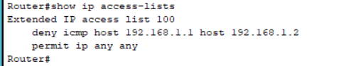
我们可以看到刚刚创建的一个访问控制列表。会先拒绝所有从192.168.1.1到192.168.1.2的ICMP报文，并且允许所有其他报文。
创建完一个access-list之后，我们还需要将其应用到某个具体的端口上。因此我们可以进入f0/0接口并输入ip access-group 100 out命令：

其中的100是指刚刚创建的access-list的编号，out是指针对接口的出方向（即使用这个访问控制列表来管理所有从这个端口进入的流量）。如果改成in，就会应用于接口的入方向。
我们可以再次尝试一下从路由器Aping到192.168.1.2

奇怪的事情发送了：仍然可以ping到（理论上应该是不行的）。其实这是因为：ACL无法过滤来自本地的数据流。而由于我们设置ACL和发送报文都处于同一个路由器上，因此ACL也就不会过滤。如果ACL被设置在B上，那么从A到B的报文就可以过滤。
接下来尝试在路由器B上重新配置ACL

这个时候我们再次尝试从Aping到B

就会发现已经ping不通了。这说明我们设置的ACL起了作用。
ACL除了可以设置ICMP报文之外，还可以设置TELNET的访问权限。由于TELNET访问使用的是TCP，我们只需要将设置中的ICMP修改为对tcp的deny即可。
首先在路由器B上清除刚刚的路由器配置，使用no命令。

我们需要先对路由器B的远程登录相关的配置：

首先，我们通过enable secret命令设置了路由器特权模式的密码为abc，然后line vty 0 4代表进入虚拟终端（VTY）线配置模式，选择的是从VTY线0到VTY线4中间的所有线。VTY线就是用来远程登录的，如TELNET。然后我们设置了远程登录密码为abcde，最后的login是表示启用Telnet连接的登录验证，启用后telnet登录时就需要线验证。
这个时候我们就可以退回到路由器A上，尝试ping路由器B。应该可以成功。
接下来我们尝试使用telnet远程登陆路由器B，使用telnet命令

可以看到成功登录了路由器B。
然后，我们退回到路由器B，设置ACL，阻止来自A的TCP访问。
首先我们可以先设置扩展访问ACL，如下：

里面的第一条命令后面的tcp指定了拒绝的是tcp命令，host 192.168.1.1 any说明拒绝所有源主机为192.168.1.1，去往任何地方的报文，eq 23代表端口号为23。
此时我们再次返回到路由器A取尝试使用telnet：

这个时候就无法访问了。说明已经阻止了telnet连接。注意这里的提示是Connection timed out，说明根本就没有发送到目标端口。
然后我们也可以重新使用基本ACL来实现相同功能。

创建完基础ACL之后需要手动将其添加到虚拟线路上

然后返回到路由器A上尝试使用telnet

我们会发现依然连接失败了。但是会发现提示信息不同：这里提示connection refused了，而之前使用扩展ACL时提示的是直接timed out。这是因为扩展ACL中，发送的报文根本没到端口，而基础ACL中，发送的信息依然会到端口，然后再被拒绝。这样做会加重端口负担，因此使用扩展ACL是更合适的选择。
9、PPP验证实验
PPP协议是一种数据链路层的协议，用于点对点连接（Point-to-Point Protocol），为链路上直接相连的两个结点之间提供数据传输的方式。
其中，PPP协议需要一种用于身份验证的协议，它就是PAP。两个设备连接时，请求方使用明文发送用户名和密码。如果密码匹配，那么连接将被接收。
首先我们先建立一个实验拓扑，如下：（注意：两个路由器之间使用Serial线连接）

注意在设置时，必须在DCE端设置clock rate 64000
我们将RouterA设为服务器，RouterB设为客户端。我们现在RouterA上设置PPP协议有关的内容。
首先，我们先在RouterA上创建一个用户，然后在一个端口启用PPP协议，并设置认证协议为PAP。输入命令如下：

首先我们创建了一个用户名为zhangsan，密码为abc的用户，然后进入端口，选择使用ppp协议，然后设置了ppp协议的认证协议为pap。
之后我们需要进入RouterB，然后也设置端口为PPP协议：
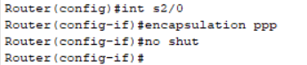
接下来我们尝试从路由器B上去连接路由器A。我们先尝试设置请求的用户为一个不存在的用户：

然后使用ping命令尝试联系路由器A：

会发现由于用户是一个不在路由器A中的用户列表中，所以ping不通。
然后我们再次尝试使用在路由器A中添加过的正确的用户名和密码（zhangsan）来ping：


会发现可以ping通。
当然，由于pap协议是一个明文发送密码的协议，安全性自然较差。因此我们可以选择另一种安全性更高的协议：CHAP协议。
这种协议的不同之处在于：发送和接收密码时使用了“挑战-响应”机制。简单来说，服务器要先发送一个随机的挑战字符串，然后客户端使用哈希算法，将密码和挑战字符串进行哈希运算，生成响应字符串，发送回客户端，然后客户端再根据得到的结果与预期结果比较来判断是否认证通过。这种方法避免了发送明文密码，提高了安全性。
在使用这种协议时，步骤与先前基本相同，只需要将ppp authentication pap中的pap改成chap即可。
为了防止其他原因干扰，我们可以尝试将两个路由器断电后重新配置。
在路由器A进行设置：


在路由器B上设置：（先不输入ppp authentication chap）


然后尝试去pingA：

这个时候发现是可以ping通的。具体原因可能是由于CHAP验证时使用的是双方共享的密钥，不一定需要保证用户和密码相同。因此在packet tracer中，一旦双方都设置了chap，就一直可以ping通（尝试了很多次都是这样）正常情况下（包括老师给出的实现指南下），只有当双方的密码相同的情况下才可以ping通